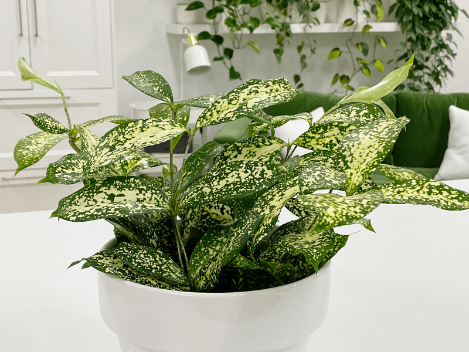
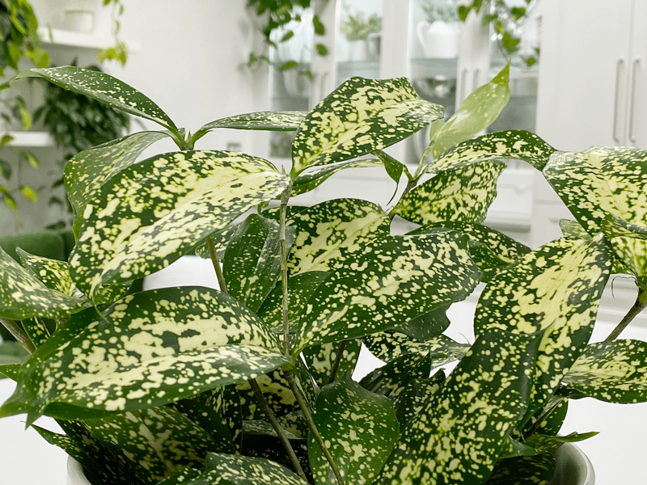
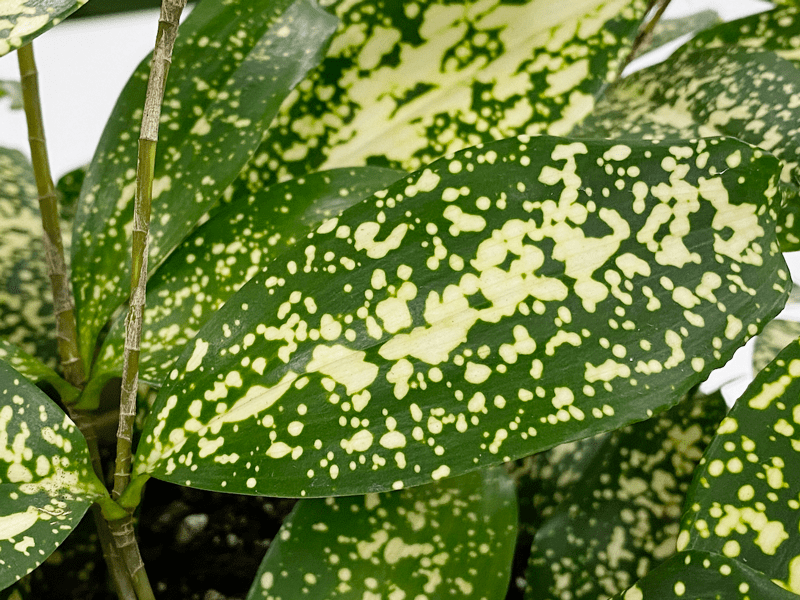

Dracaena Surculosa | Florida Beauty | Care Difficulty – Easy
The moment my eyes fell upon this plant, I was in love! It is simply a gorgeous plant with its glossy green leaves and white (or sometimes yellow) splotches that cover the leaf surface. If you are familiar with this plant, you may know it as either the Dracaena Surculosa (dra-SEE-nah sur-ku-LO-sa), Dracaena Gold Dust, Japanese Bamboo, Gold Dust Plant, or the Spotted Leaf Dracaena.

If the growing conditions are just right, you may be rewarded with fragrant white flowers and red berries, but even if that never happens, you will still witnessing the growth of this plant. The new leaves appear as tightly rolled cones, unfurling to show beautiful creamy yellow markings. They look so tender. If you are seeking a fast-growing plant, this isn’t the plant for you…unless you are looking to brush up on your patience-building skills, which is never a bad thing. But hang in there, because in time this plant can reach 2-3 feet.
To be honest, I don’t often see this plant variety in the stores… I was just lucky enough to stumble upon some tiny two-inch potted plants. I ended up purchasing four of them and repotted all of the them into one pot. Obviously, I am still working on my patience skills.

Light Requirements
Like many house plants, it likes bright, filtered light. On the bright side (haha) it can also tolerate lower light conditions, which makes it a win-win. It’s important to know that the more light a dracaena receives, the better the variegation of the foliage there will be, so keep that in mind when looking for the perfect spot for it in your home.
Watering Requirements
Depending on the climate of your home, it may need to be watered 1-2 times a week. The important thing to keep in mind is to water them when the soil is dry down to about the first knuckle. Don’t overwater. A well-draining pot and potting soil are essential for the plant. If you live in a four-season climate, you will want to slow down on the watering in the colder months, since the plants pretty much stop growing and become dormant.
Temperature Requirements
Dracaena can tolerate temperatures from 65-70 degrees (F). It can take a low temperature down to 50 degrees (F).
Additional Care
-
Remove any dead, discolored, damaged, or diseased leaves and stems as they occur with clean, sharp scissors. I look over my plants every time I water them.
-
Clean the leaves often enough to keep dust off of them. Use a damp cloth with my neem oil solution and lightly rub off any dust to keep the leaves healthy, shiny, and pest free.

Plant Characteristics to Watch For
Diagnosing what is going wrong with your plant is going to take a little detective work and even more patience! First of all, don’t panic and don’t throw out a plant prematurely. Take a few deep breaths and work down the list of possible issues. Below, I am going to share some typical symptoms that can arise. When I start to spot troubling signs on a plant, I take the plant into a room with good lighting, pull out my magnifiers, and begin by thoroughly inspecting the plant.
The leaves are dropping off my plant.
- If the leaves are dropping off it can be an indicator of either too little or too much light.
- Solution: Assess the light that it is currently in and relocate it to a spot that either has more or less light.
The leaves have brown tips.
- If you notice brown tips and spots on your dracaena, the problem is probably due to inconsistent watering. If the soil dries out too much, the tips of the leaves will present with brown tips and spots.
- Solution: Adjust your watering schedule to prevent the plant from experiencing drought or flooding.
I have brown dying leaves on my plant.
- It’s not uncommon for older leaves to brown and die.
- Solution: Remove the brown and dying leaves as soon as you see them. Cutting off these leaves allows the remaining healthy foliage to receive more nutrients and improves the plant’s appearance.
My plant is tall and spindly.
- If you have the plant in a lower light situation, the plant may get tall and spindly as it reaches for the light.
- Solution: You can prune off 1/3 of the main stem, which will make it sprout new growth in the area of the cut and will make the plant bushier.
My plant stopped growing.
- Stunted growth may be caused by root mealybugs. Darn those bugs! Or it can be an indicator that the roots are rotting.
- Solution: Remove the plant from the pot and check for evidence around the roots. If you find them, use an appropriate pesticide. Place granules of a commercial pesticide in the potting mixture. During the next month, examine plants weekly for traces of reinfestation. If you don’t find any mealybugs, check the roots and make sure they look healthy. If these plants sit in soggy soil, they can develop root rot. Depending on the damage, you might be able to save it by repotting it in fresh soil.
Common Bugs to Watch For
If you want to have healthy house plants, you MUST inspect them regularly. Every time I water a plant, I give it a quick look-over. Bugs/insects feeding on your plants reduces the plant sap and redirects nutrients from leaves. Some chew on the leaves, leaving holes in the leaves. Also watch for wilting or yellowing, distorted, or speckled leaves. They can quickly get out of hand and spread to your other plants.
If you see ONE bug, trust me, there are more. Take action right away. Some are brave enough to show their “faces” by hanging out on stems in plain sight. Others tend to hide out in the darnedest of places, like the crotch of a plant or in a leaf that has yet to unfurl.
- Mealybugs look like small balls of cotton. They can travel, slooooooowly, but they have a strong will and determination! Though they move slowly, if any plant is touching another, there is a chance the mealybug will hitch a ride on a new leaf and spread. They breed like rabbits of the insect world. Females can deposit around 600 eggs in loose cottony masses, often on the underside of leaves or along stems.
- Scales are dark-colored bumps that are primarily immobile insects that stick themselves to stems and leaves. They are rather inconspicuous and don’t look like a typical insect. They can range in color but are most often brownish in appearance. They’re called “scales” primarily due to their scale-like appearance on a plant, due to waxy or armored coverings. They are often seen in clumps along a stem, sucking away at the plant’s juices with their spiky mouthpart.
- Aphids are more commonly seen if you place your plants outdoors. Aphids are indeed bugs. They are tiny insects that, along with black, also come in shades of yellow, green, brown, and pink. They are often found on the undersides of leaves.
- Spider mites are more common on houseplants. They are not insects–they are related to spiders. These appear to be tiny black or red moving dots. Spider mites are nearly invisible to the naked eye. You often need a magnifying lens to spot them, or you may just notice a reddish film across the bottom of the leaves, some webbing, or even some leaf damage, which usually results in reddish-brown spots on the leaf.
Toxicity Warning
These plants are mildly toxic to pets. The problems with toxicity come from them ingesting the plant, and reports indicate that it takes moderate to substantial ingestion for symptoms to occur. They contain saponins, which can cause drooling, vomiting, weakness, and a lack of coordination. All parts of the plant, including the flowers and berries, are mildly poisonous…so keep it away from your pets.
© AmieSue.com